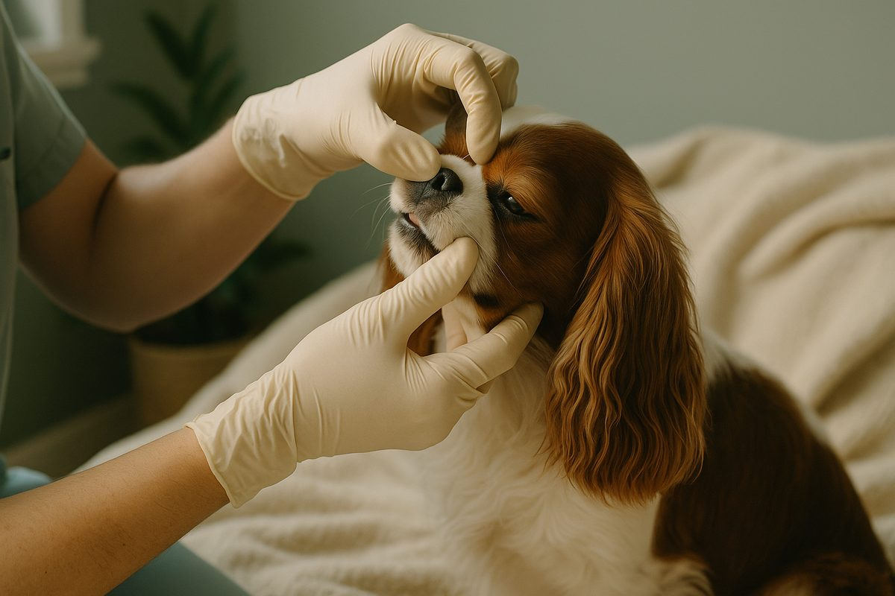
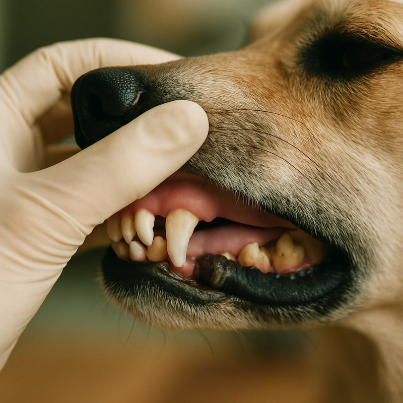
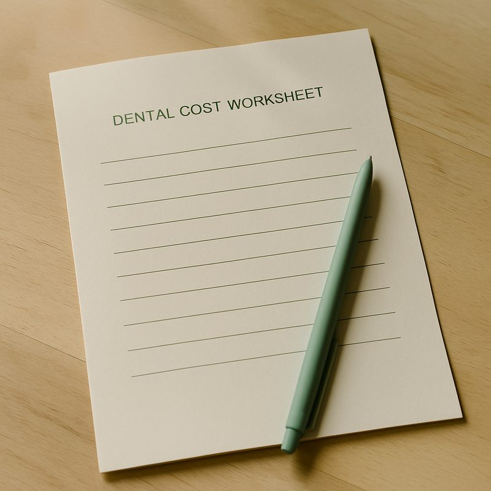

How much does pet dental cleaning cost in Australia?

A scale-and-polish under anaesthetic for a healthy mouth is $400 to $700 in Australia for a small to medium dog or cat. Each extraction adds $200 to $300. Anaesthesia-free cleaning at groomers is cheaper ($100 to $200) but does almost nothing about the disease below the gum line, which is where dental disease actually lives. Below: what is in the bill, why annual cleans cost less than waiting until the mouth is bad, and the cheap option that turns out to be the expensive one.
What you're actually paying for
Pet owners often think the bill is for the cleaning itself. It is mostly for everything around the cleaning. A typical scale-and-polish appointment includes:
- Pre-anaesthetic consult and physical examination
- Pre-anaesthetic blood panel (especially in pets over 7)
- Intravenous catheter and fluid therapy through the procedure
- Anaesthetic gas, monitoring equipment, dedicated nurse for the duration
- Full-mouth dental probing and charting under anaesthetic
- Ultrasonic scaling above and below the gum line
- Polishing to smooth the enamel
- Recovery and post-op observation
- Optional: full-mouth dental X-rays (some clinics include, some don't)
The actual scale-and-polish is the cheap 20-minute part. The 90 minutes around it are what the bill reflects.
Real Australian price ranges
The big variable is extractions. A six-year-old Cavalier coming in for a first ever clean often turns into 3 to 5 extractions and a $1,000+ bill. The same dog cleaned annually from age 3 might never need extractions. The maths quietly favours regular maintenance.

Why anaesthesia-free cleaning misses the point
Anaesthesia-free cleaning is offered at some grooming salons and pet shops for $100 to $200. It involves manually scraping visible tartar off the crown of the tooth while the pet is held still. The result looks like a clean mouth.
The problem: dental disease isn't on the visible part of the tooth. It is below the gum line, between the tooth and the bone, where the bacteria cause periodontal disease and the bone is being eaten away. Anaesthesia-free cleaning cannot reach below the gum line, that requires the pet to be still and pain-free in a way that only anaesthetic provides.
Tell people when not to do it: anaesthesia-free cleaning is appealing because it is cheaper and avoids anaesthetic. It is also misleading, because it produces a cleaner-looking mouth without addressing the actual problem. Many owners do it for years and end up with the same dog needing 8 extractions at age 9, plus the $200 a year they thought they were saving. The dental cleaning for dogs guide covers what proper cleaning involves.
How often is right
- Small breeds and brachycephalics (Cavaliers, Yorkies, Pugs, Pomeranians): annual from age 3.
- Medium and large breeds: every 2 years from age 5, or annually from age 7.
- Cats: every 2 years from age 5 if home dental care is good, annually if not.
- Dogs and cats with chronic gingivitis: as often as the vet recommends, sometimes 6-monthly.
Daily prevention that beats every clean
The single most effective home intervention is daily tooth brushing with enzymatic pet toothpaste. 30 seconds a day. Costs about $15 a month. Reduces the rate at which professional cleans turn into extraction visits more than any other variable.
Behind brushing: vet-recommended dental diets (Hills T/D, Royal Canin Dental), VOHC-accepted dental chews (the dental chews guide covers which earn the seal), and water additives. None replaces brushing or professional cleaning, but together they buy time and reduce extraction risk.

Straight answers
Why does professional cleaning cost so much?
Most of the bill is the anaesthetic and monitoring, not the cleaning itself. Pre-anaesthetic bloods, IV catheter, fluids, anaesthetic gases, dedicated nurse monitoring, recovery, and dental X-rays where needed. The actual scale-and-polish is the cheap part.
Is anaesthesia-free cleaning worth doing?
No. It cleans the visible part of the tooth and does almost nothing about disease below the gum line, which is where the disease actually is. Looks like a clean. Misses the problem. Often makes owners think the mouth is fine when it isn't.
Do small dogs really need cleaning more often?
Yes. Small breeds (Cavaliers, Yorkies, Pomeranians) have crowded teeth and shallower roots, plaque accumulates faster. Annual cleaning from age 3 is normal. Larger breeds often go to age 5 to 7 before the first one.
What's included in a 'scale and polish'?
Full mouth examination under anaesthesia, ultrasonic scaling above and below the gum line, polishing to smooth the enamel, and (in good clinics) full-mouth dental X-rays to find disease the eye can't see. Some include a fluoride treatment.
Will my pet need teeth out?
It depends entirely on what the pre-anaesthetic check and X-rays show. About 30 per cent of first-time cleans turn into 1 to 3 extractions. Pets coming in for routine annual maintenance rarely need any.
Are blood tests before anaesthesia really necessary?
Yes, particularly in pets over 7. Around 1 in 20 apparently-healthy senior pets has occult kidney or liver issues that change the safe anaesthetic protocol. The test costs $100 to $200 and is the cheapest insurance against a bad outcome.
Pet dental work is one of the few areas where the cheap option is genuinely the expensive one. Spending $500 a year on annual cleans from age 3 routinely beats spending $2,500 once at age 8 plus quality-of-life issues from chronic untreated dental pain. Related: dental cleaning for dogs, dental chews, vet payment plans. Information here is general and isn't a substitute for veterinary advice.